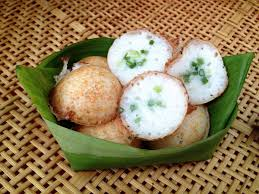
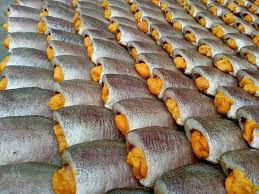
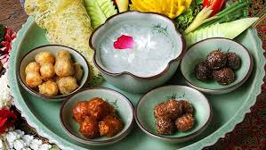
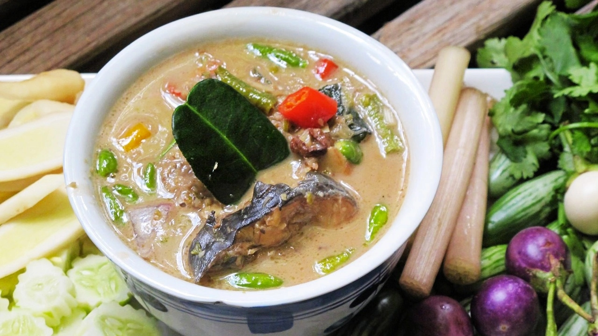
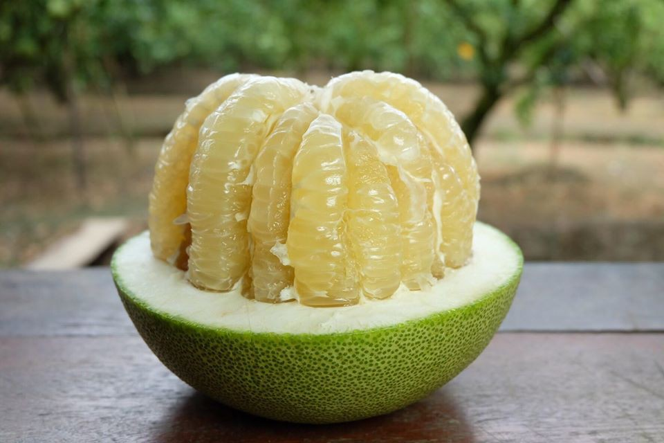
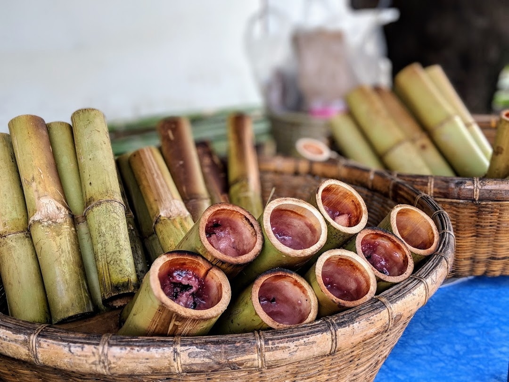
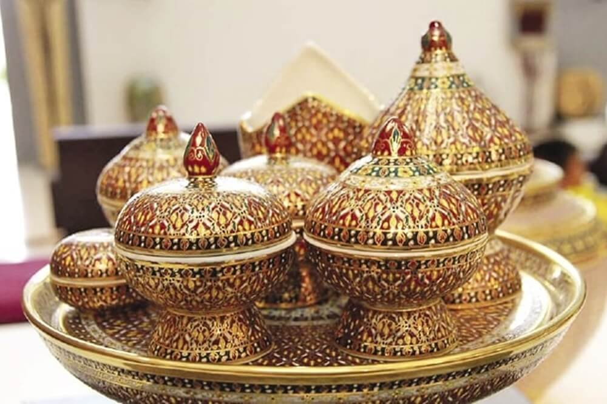
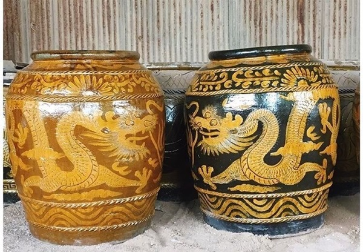

แชมป์ของหวานไทย อันดับ 1 จาก TasteAtlas หากินได้ทั่วไปแต่รสชาติดีที่สุดต้องยกให้แถบกรุงเทพฯ และปริมณฑล

ของดีขึ้นชื่อเรื่องเนื้อแน่น หอม และเค็มน้อยกำลังดี
เมนูเบอร์หนึ่งที่ใช้ "กุ้งแม่น้ำ" ตัวโต เป็นเอกลักษณ์ของอยุธยาและนครปฐม

ของดีเมืองเพชรบุรีและชาววัง หอมเย็นชื่นใจด้วยน้ำลอยดอกมะลิ

ของดีลุ่มแม่น้ำภาคกลาง โดยเฉพาะแถบสุพรรณบุรีและชัยนาท

ผลไม้ขึ้นชื่อของจังหวัดชัยนาท รสชาติหวานซ่อนเปรี้ยว เนื้อกุ้งใหญ่

ของดีชลบุรี (ภาคตะวันออก/กลาง) ที่ขึ้นชื่อเรื่องความหวานมันของกะทิ

งานศิลปะสุดประณีตจาก หมู่บ้านเบญจรงค์ดอนไก่ดี จ.สมุทรสาคร

สัญลักษณ์คู่เมืองราชบุรีที่สืบทอดกันมานานหลายทศวรรษ
มีดตีมือที่คมกริบและแข็งแกร่ง สืบทอดวิชาช่างทองและช่างเหล็กมาตั้งแต่สมัยโบราณ